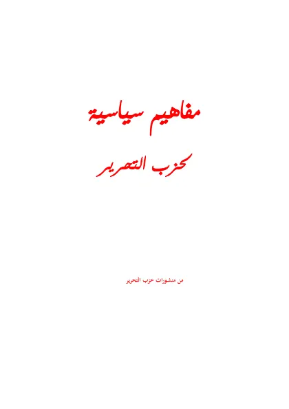

← Maktabah Ilmu · مكتبة العلم

Syekh Taqiyuddin an-Nabhani
مفاهيم سياسية لحزب التحرير
Mafahim Siyasiyah li Hizbit Tahrir
Taqiyuddin an-Nabhani · wafat 1398 H
Tersedia: Arab, Indonesia, Inggris · 184 halaman
Baca Mafahim Siyasiyah li Hizbit Tahrir (مفاهيم سياسية لحزب التحرير) karya Taqiyuddin an-Nabhani secara gratis di Maktabah Ilmu: teks Arab, Indonesia, Inggris. Tanpa daftar, tanpa iklan.
Buka kitab iniLihat lemari ilmu
Daftar isi
- المقدمة
- محتويات الكتاب
- مقدمـة
- السـياسـة فكـرة وطـريقة
- الخطط والأسـاليب السـياسـية
- المـوقف الدولي
- العـرف الدولي والقانـون الدولي
- دوافع الصراع بين الدول
- قضايا العالم الكبرى
- أسـباب شـقاء العـالم
- كيفية التأثير في السياسة العالمية
- الوعي السياسي
Sumber: hizb-ut-tahrir.org (PDF resmi)